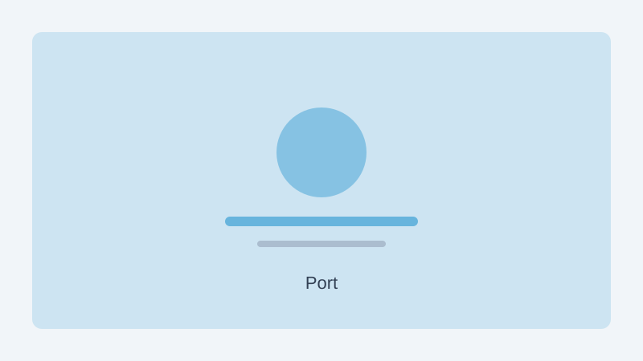

PSA Singapore terminals handled a record number of container movements in July, as shipping activity across major trade lanes remained brisk through the summer period. Terminal operators reported smooth berth scheduling despite the higher throughput.
Industry observers attributed the strong volume to sustained demand for consumer goods and intermediate components moving through Southeast Asian supply chains. Logistics firms said warehouse capacity near the port remained tight, with many shipments moving quickly from vessel to inland transport.
PSA said it continues to invest in automated yard equipment and digital tracking tools to maintain efficiency as volumes grow. Port authorities expect activity to remain elevated into the third quarter, with additional sailings scheduled on key regional routes.